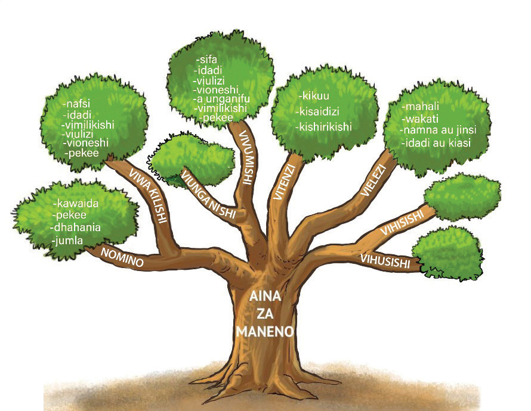

Kielelezo Na. 2 1: Mti unaoonesha aina za manenoBaada ya Faji kujifunza aina za maneno kutoka kwa shangazi yake, alijawa na furaha kwani alielewa aina mbalimbali za maneno.
Alikuwa na shauku ya kutumia aina hizo za maneno katika kuunda sentensi kwa kuzingatia uhusiano wake kimatumizi.
Maswali
1.
Habari uliyoisoma inazungumzia nini?
2.
Aina zipi za maneno zimezungumziwa katika habari uliyoisoma?
3.
Kutokana na habari uliyoisoma, maneno gani hufanya taarifa ya sentensi ikamilike?
4.
Ni maneno yapi yanayodokeza sifa za nomino au viwakilishi?
5.
Vielezi vina umuhimu gani katika sentensi?